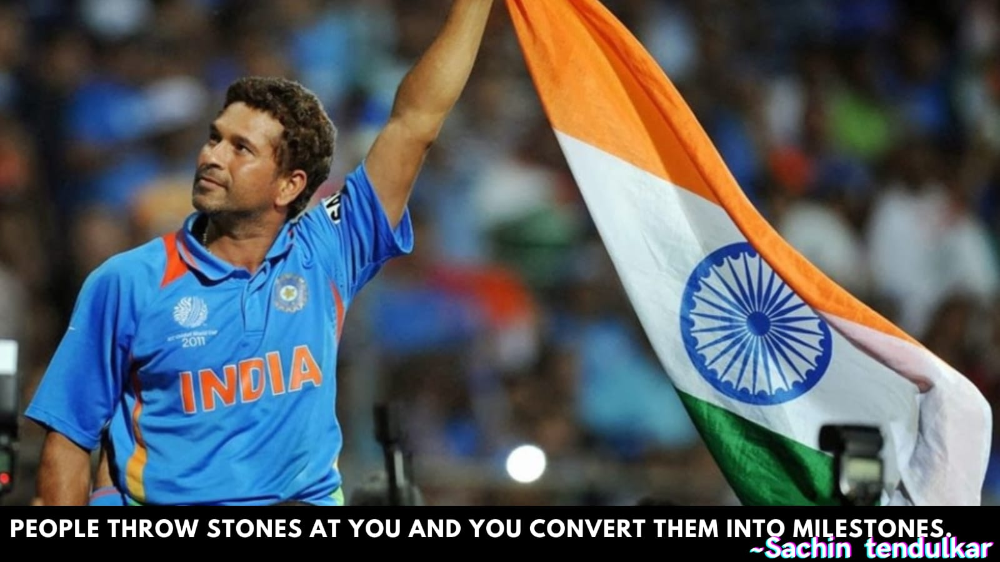
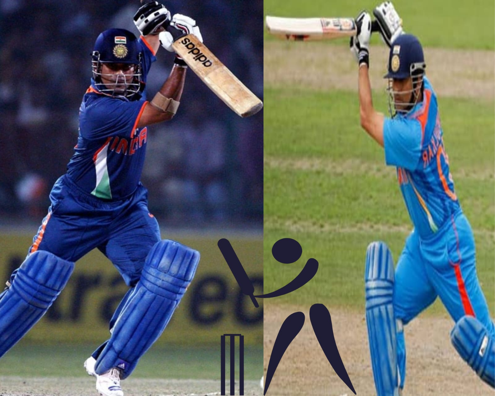
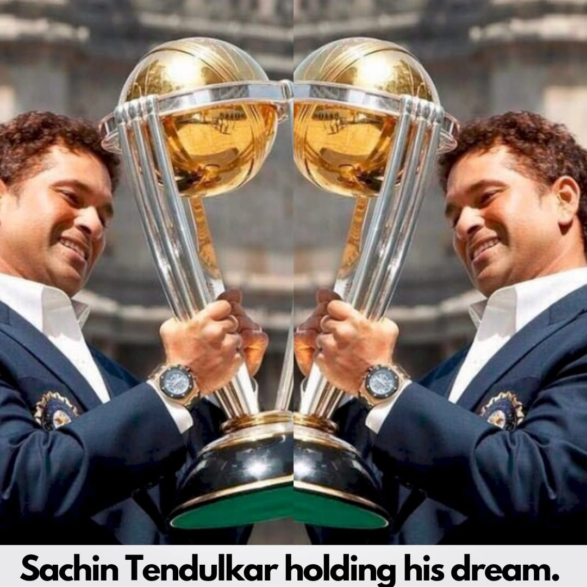
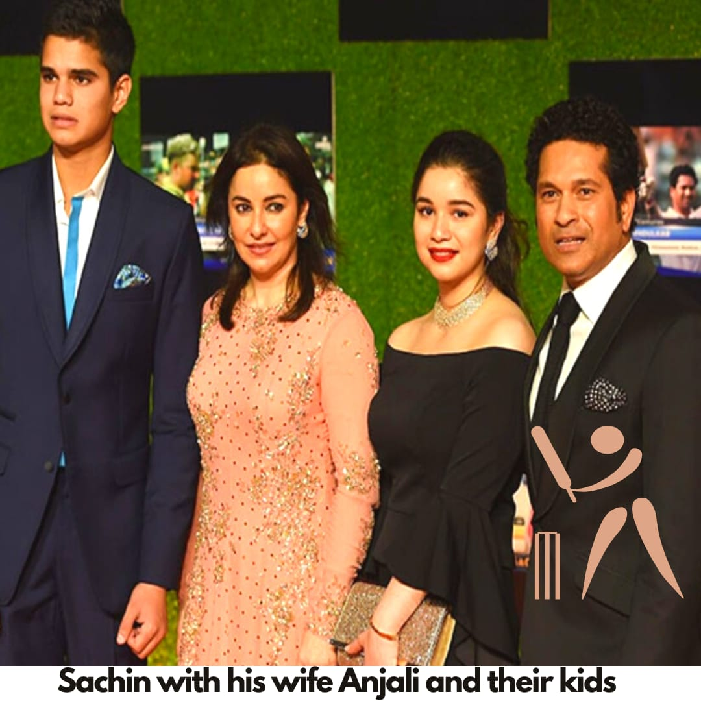
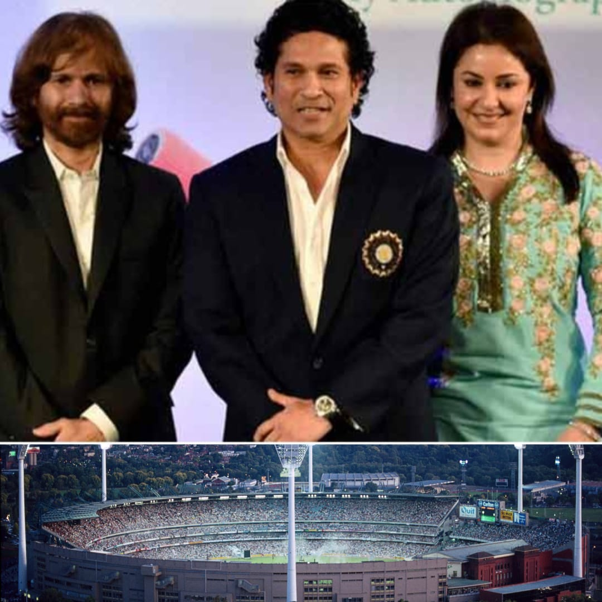
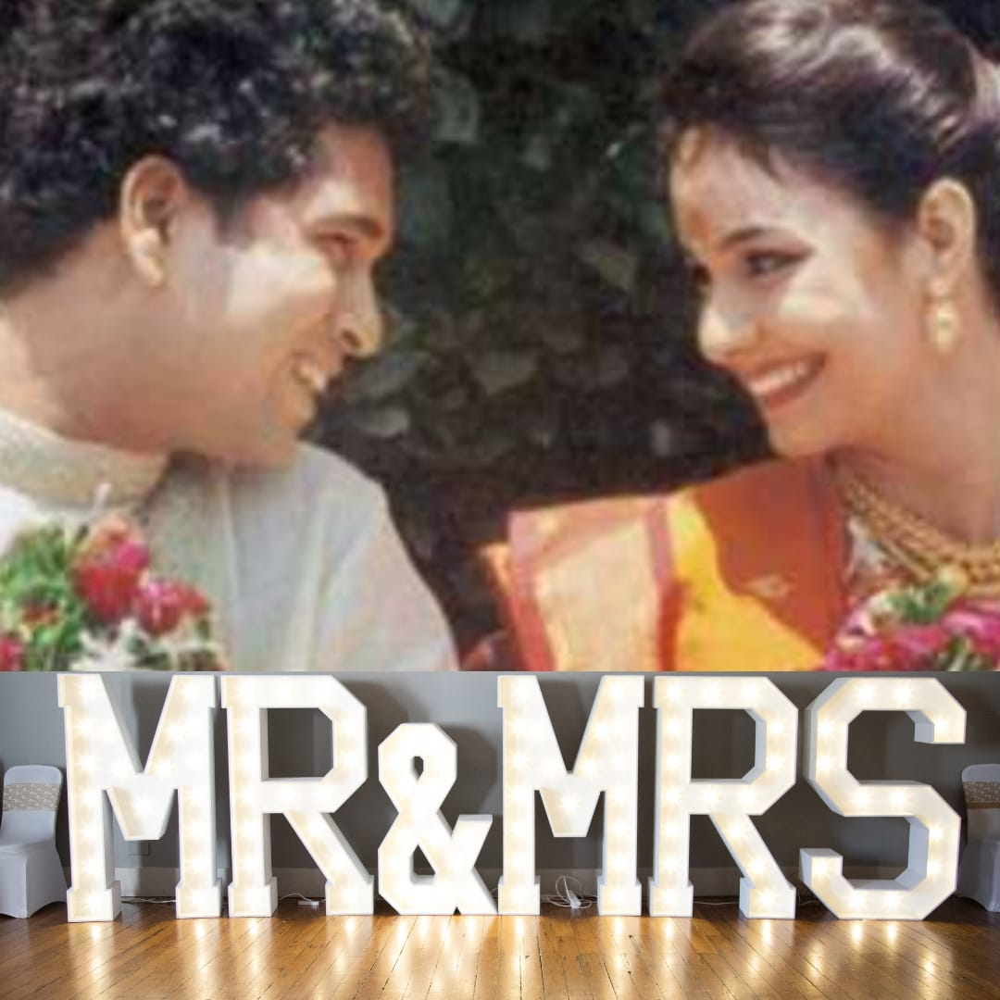

SHRI SACHIN RAMESH TENDULKAR

Known as God Of Cricket
Birthday:
24 April
Born:
Mumbai,Maharastra,India
“Don't stop chasing your dreams, because dreams do come true.” - Sachin Tendulkar
SACHIN TENDULKAR CHILDHOOD
Sachin Tendulkar born at Nirmal Nursing Home in Dadar, Bombay on 24 April 1973 to a Rajapur Saraswat Brahmin Maharastrian family.
His father, Ramesh Tendulkar was a well known novelist and poet. His mother, Rajni worked in the insurance industry.He has two half-brothers namely
Nitin and Ajit and one half-sister Savita. His formative years were spent in the "Sahitya Sahawas Cooperative Housing Society" in Bandra (East).
He did his schooling from the Sharadashram Vidyamandir High School. In the school days, he attended the M.R.F.Pace Foundation to train himself
to be a fast bowler. But as per the suggestion of Dennis Lillee, the fast bowler from Australia, he concentrated on batting. Sachin Tendulkar
also likes playing tennis. At the age of 14, he scored 326 out of a world-record stand of 664 in a school match and became famous in Bombay
schoolboys.
Images of Sachin Tendulkar The Child
SACHIN TENDULKAR CRICKETING CAREER
- He has played 200 Test Matches and has scrored 15,921 runs with a batting average of 53.78 and have smashed 51 centuries
& 68 half-centuries
throughout his test career.
-
He has played 463 ODI Matches and has scored 18,426 runs with a batting average of 44.83 and have smashed 49 centuries
& 96 half-centuries throughout his ODI career.
-
He has played 78 IPL Matches and has scored 2,334 runs with a batting average of 34.83 and have smashed 1 century & 13
half-centuries throughout his IPL career.


AWARDS AND HONORS OF SACHIN TENDULKAR
SACHIN TENDULKAR'S FAMLY



Sachin Tendulkar has married to Anjali Tendulkar who is a doctor with her profession. His son name is Arjun Tendulkar and his daughter is
Sara Tendulkar. His brother name is Ajit Tendulkar who has played an important role in sachin's cricket journey.
Some Interesting Cricket Incidents About Sachin Tendulkar
-
Once an australian bowler Brad Hodge took the wicket of Sachin Tendulkar.And that night he went to Sachin Tendulkar room
and asked Sachin to sign the match ball. Then Sachin took the ball and wrote This is the first and last time you got
my wicket in your cricketing career. After that, Sachin faced Hodge in many matches and Hodege was never able to take
Sachin's wicket in his career.
-
Shoaib Akhtar Pakistan fast bowler once bowling bouncers to Virendra Sehwag and constantly asking Sehwag to hit the six. Them
Sehwag replied to Akhtar samne tera baap khada hai woh marega, and next time when baap came to bat, he hit an upper
cut to bouncer which gone to six. And that baap was,Sachin Tendulkar.
<